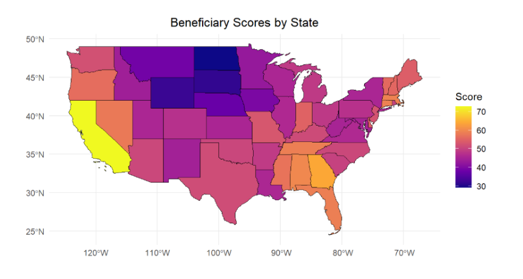
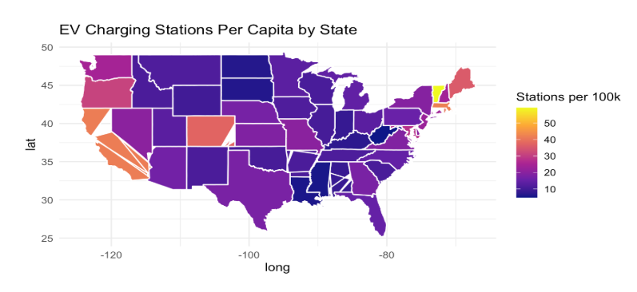
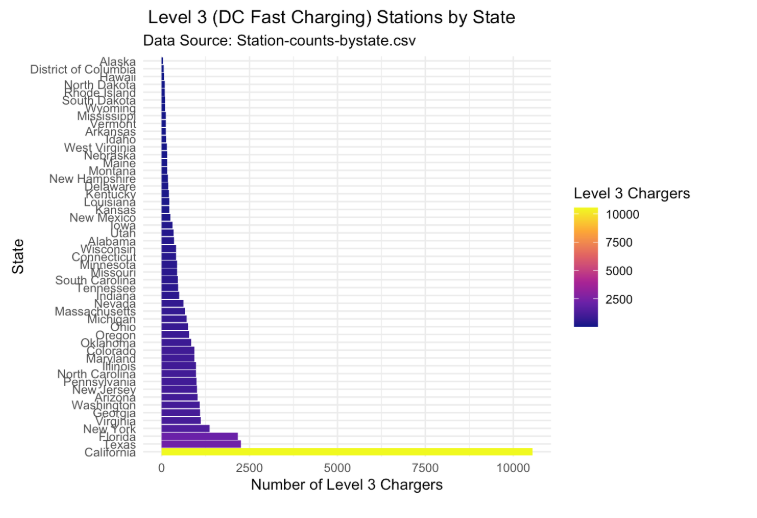

Which State is Adoption Fastest to Electric Vehicles
Table of Contents
- Introduction
- Motivations
- Data Sources
- Analysis
- Visualizations
- Relationship to Prior Work
- Potential Next Steps.
- Conclusion
Introduction
As the shift towards sustainable transportation gains momentum, identifying which U.S. states are adapting best to electric vehicles (EVs) is crucial. Our “EVengers” team has undertaken a comprehensive analysis to answer this overarching question, “Which State is adapting to electric vehicles the best?”. This exploration is driven by the broader implications for economic growth, environmental sustainability, and infrastructural development. In addition, in order to better tackle this question, our team formulated specific research questions tailored to uncover various aspects of EV adoption. They are as follows:
Motivations
The motivations to conduct an analysis of EV adoption by state stem from both individual interests and societal needs. For individuals, the decision to adopt an electric vehicle (EV) often hinges on practical and financial considerations. High gasoline prices, rising awareness of environmental sustainability, and the desire to reduce personal carbon footprints are powerful incentives. However, the feasibility and appeal of adopting an EV vary significantly based on where one lives, influenced by factors such as electricity prices, average driving distances, and state infrastructure. This makes a state-specific analysis crucial for understanding the practicalities of widespread EV adoption.
From a state perspective, the motivations for encouraging EV adoption are equally compelling. States with high average mileage have an opportunity to significantly cut transportation-related greenhouse gas emissions by transitioning to EVs. Similarly, air quality concerns drive motivations in urbanized and industrial regions. States plagued by smog and pollution, view EV adoption as a critical strategy for improving public health and meeting clean air standards. States with lower electricity costs can provide EV owners with substantial savings compared to gasoline-powered vehicles.
Analyzing these motivations is vital for society as a whole. Transportation accounts for nearly 30% of global greenhouse gas emissions, and understanding state-specific factors can help policymakers design targeted strategies to promote EV adoption. This benefits society by improving air quality, reducing health care costs linked to pollution, and contributing to global efforts to combat climate change. Furthermore, widespread EV adoption reduces reliance on volatile oil markets and creates opportunities for economic growth through renewable energy integration. By identifying the states most poised to benefit, analyses like this can help prioritize investments and accelerate the transition to a sustainable transportation future.
Sata Sources
Alternative Fueling Station Locator:
Source: U.S. Department of Energy’s Alternative Fuels Data Center (AFDC)
Description/Usage: Analyze the number and distribution of charging stations per state, assess charging speeds (Level 1, Level 2, DC Fast Charging), and visualize geographic coverage.
Limitations: Data timeliness due to updates, Data completeness for every existing charging station.
U.S. Census Data:
Source: U.S. Census Bureau
Description/Usage: Provides population and geographic data, including population density and urban-rural classifications.
Limitations: Geographical Detail due to granularity of data being limited because of privacy concerns. Data suppression to protect individual privacy can lead to missing data as well.
EIA - Power Generation
Source: U.S. Energy Information Administration
Description/Usage: This data set provides comprehensive information on electricity generation in the U.S.
Limitations: Updated on a monthly basis, real time data would not be possible to obtain.
EPA - Air Quality
Source: U.S. Environmental Protection Agency
Description/Usage: This data set provides daily and historical air quality measurements across the United States, captured through the Air Quality Index (AQI).
Limitations: rapid fluctuations in pollutant concentrations might not be fully captured, which can limit the utility of data in assessing short-term exposure risks.
State Vehicle Registration Data:
Source: National Highway Traffic Safety Administration (NHTSA)
Description: Offers data on vehicle registrations, which can be filtered to focus on electric vehicles.
Limitations: Inconsistency in Reporting, as data collection methods and reporting standards can vary significantly from state to state, leading to potential inconsistencies in how vehicle types are classified and reported.
Analysis
The overarching goal of this analysis is to identify which state is adopting EVs the best. An important component of this question involves evaluating which state stands to benefit the most from this transition. By focusing on the potential benefits, it provides a deeper understanding of the motivations behind EV adoption. States with high average driving distances, like Georgia, stand to benefit substantially from the reduced operating costs and emissions offered by EVs. Similarly, states with air quality concerns, like California, can leverage EV adoption to address public health issues tied to pollution. Electricity prices also play a critical role, as states with low energy costs provide a stronger economic case for EV ownership compared to traditional internal combustion engine vehicles.
This targeted evaluation not only identifies the states that would benefit most from EV adoption but also sheds light on the challenges these states may face in achieving widespread adoption. By tying the benefits of EV adoption to state-specific conditions, this analysis supports policymakers in EV incentives and infrastructure investments to accelerate adoption.
The analysis of “How do the number and speed of EV charging stations in each region affect EV adoption?” helps answer the main question: “Which states are adapting to electric vehicles the best?” By researching how many charging stations each state has per person and how quickly these stations can charge a vehicle, we can see which states are best prepared for more people using electric vehicles.
For example, finding out that Vermont has the most charging stations per person and that California has many fast-charging stations shows that these states are leading in making it easier for people to have electric cars. This information helps us understand which states are doing well in building the right infrastructure for electric vehicles.
Additionally, by examining how charging stations are spread out across states and how they match up with where people live and how many electric cars are there, this analysis highlights which states are planning their resources effectively. States that have a good balance of electric cars and charging stations, especially in crowded areas, are likely adapting better to electric vehicles.
In simple terms, this analysis shows us which states are ready for more electric cars by looking at their charging stations and how well these meet the needs of their residents, pointing out who is leading the way in embracing electric vehicle technology.
Using data sourced from the National Renewable Energy Laboratory (NREL) and Experian Information Solutions, we observed notable patterns in alternative fuel vehicle (AFV) registrations. Flexible Fuel Vehicles (FFVs) and Hybrid Electric Vehicles (HEVs) dominate registration numbers, reflecting their compatibility with existing infrastructure. In contrast, niche AFVs like hydrogen fuel cells and compressed natural gas (CNG) vehicles show limited adoption due to less-developed infrastructure and higher costs.
Data from the U.S. Energy Information Administration revealed the rapid growth of renewable energy sources like solar and wind, which align with increased EV adoption. Solar energy exhibited exponential growth post-2010, driven by tax incentives and declining costs. Wind energy also showed remarkable growth due to technological advancements and favorable policies. These trends highlight how renewable energy supports the decarbonization of EVs by providing cleaner electricity for charging.
State policies and incentives significantly impact EV adoption. Programs like tax credits for EV purchases and renewable portfolio standards (RPS) directly correlate with higher EV adoption rates in states like California and New York. Localized incentives, such as rebates and exemptions for solar energy, further enhance the connection between renewable energy and EV adoption. States with extensive charging networks, such as California, lead in EV adoption. However, targeted investments in states like Texas and Florida are helping to close the gap. Public charging networks remain essential, with faster adoption observed in regions with higher infrastructure density.
Visualizations
Using a weighted formula that incorporates air quality, average miles driven, and electricity prices, the analysis highlights states where EV adoption can yield the most significant environmental, economic, and societal advantages.
Formula:
(Air Quality Score x 34%) + (Average mileage drive x 33% ) + (Electricity prices x 33%)
The heat map below shows the scores of each state, we see that California, Georgia and Alabama would benefit the most from EV adoptions when these three factors are equally weighted.

States that generate electricity from renewable sources stand to benefit the most from EV adoption, as they provide clean energy to power vehicles that once relied on fossil fuels. Below, you can interact with this chart to explore the power generation sources of each state.
While researching through data on EVs, we created maps and charts to help us visualize the data we gathered and answer our individual analyses to ultimately answer our overarching question. These visualizations allow us to compare our data and look for similarities and differences when it comes to figuring out which states are adapting to EV’s the best. The following are some of our most important findings.

The map illustrates the distribution of electric vehicle (EV) charging stations per capita across various states, highlighting regions with more infrastructure relative to their population.. States with higher per capita charging stations, like Vermont and California, are shown to be leaders in building infrastructure that supports the shift toward electric vehicles. This helps identify these two states as leaders when it comes to answering our overarching question.

This graph shows the number of Level 3 (DC Fast Charging) stations by state, illustrating a significant variation in the availability of rapid charging infrastructure across the U.S. California leads by a very large margin with the highest number of fast chargers, followed by states like Texas and Florida. This data is crucial as it highlights which states have better-developed infrastructure to support quick and efficient charging for electric vehicles, tying into our overarching question.
Relationship to Prior Work
Our findings emphasize on the role of state policies, infrastructure, and economic factors in shaping electric vehicle adoption. Studies from organizations like the U.S. Department of Energy and the International Council on Clean Transportation have shown how incentives such as tax credits, rebates, and Zero-Emission Vehicle mandates help increase EV adoption. For example, California has been identified as a leader because of its strong ZEV mandates and generous tax incentives. This is consistent with our analysis, which highlights how California’s well-designed policies and investments in public charging infrastructure have kept it at the forefront of EV adoption. States like New York also show similar progress by leveraging similar incentives.
Infrastructure has always been a major focus of EV adoption studies. Research from the U.S. Department of Energy stresses that public charging networks are essential for Ev adoption growth, charging infrastructure is a significant obstacle for many EV buyers. Our findings strongly support this, showing that states with more charging stations experience faster growth in EV registrations. California, with its extensive network of charging stations, is a clear example. However, states like Texas and Florida are catching up, showing that targeted investments in infrastructure can help close the gap. To uncover more about these specific factors that were impacting EV adoption growth, a question we worked to uncover was “How do year-over-year EV adoption growth rates differ across states and what are the key factors influencing these trends?” Economic factors, like state GDP and population density, also play a big role in adoption rates. High-GDP states with dense urban areas, such as California and New York, benefit from better infrastructure and greater consumer awareness. On the other hand, low-GDP states like Oklahoma have shown rapid growth in EV adoption when supported by localized policies and incentives. This highlights the importance of flexible strategies that adapt to regional needs.
Potential Next Steps
Looking ahead, there are several opportunities for future research. One area to explore is the cultural and behavioral factors influencing EV adoption. Public perception, awareness campaigns, and societal attitudes toward sustainability could be critical drivers of future growth. Another area is the impact of new technologies. Nationwide charging networks and advancements in battery technology are already shaping the EV market, but more analysis is needed to understand their full effects. Comparing states with similar economic profiles but different levels of federal support could reveal which strategies work best for scaling adoption even on a global level. Lastly, rural and undeserved areas deserve more attention. These regions often lack charging infrastructure, making it harder for people to consider switching to EVs. By focusing on expanding infrastructure and designing policies for these areas, states can bridge the gap between urban and rural EV adoption. Long-term studies could also provide insight into how evolving policies, like phasing out incentives or increasing ZEV mandates, impact growth over time.
Conclusion
In conclusion, our findings indicated that California is adapting the best to EVs. This result reflects much of what prior studies have shown, while also highlighting emerging trends. By investing in infrastructure, designing adaptive policies, and considering factors like cultural attitudes and federal initiatives, states can take significant steps toward accelerating EV adoption and creating a more sustainable future.